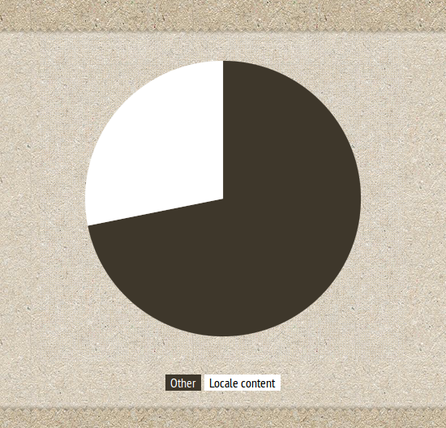
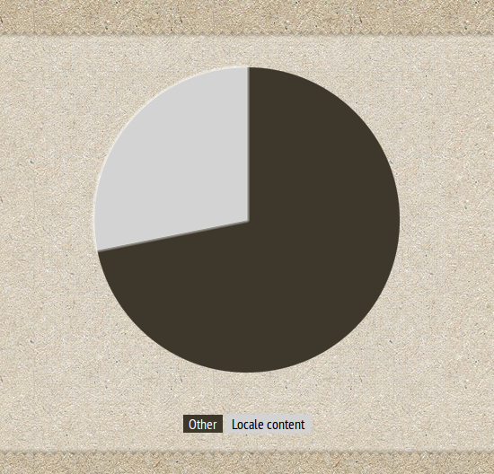
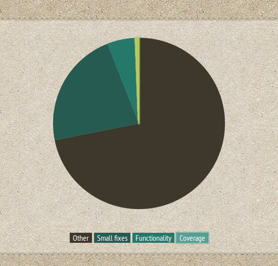
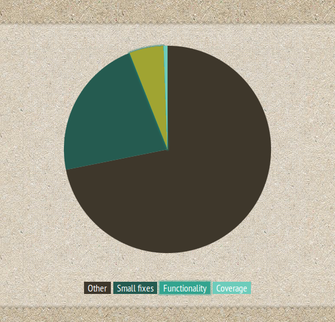
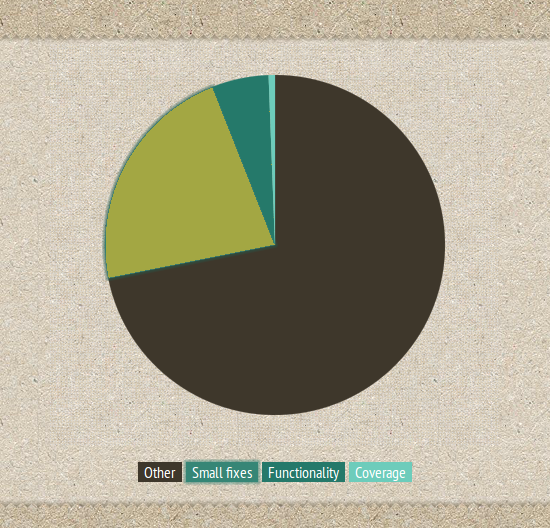

Globalize ♥ CLDR
Hello, Olá, ¡Hola, Hallo, 你好
by Rafael Xavier / @rxaviers / gh:rxaviers
Global market === various languages


Global market === various languages === regional differences

Globalize 0.x
Globalize 0.x bugs
Globalize 0.x bugs
Globalize 0.x |
+ |
.NET |
Globalize 0.x bugs
Globalize 0.x bugs
Not enough coverage
".NET Framework produces arabic culture and names it persian!"
Globalize 0.x bugs
Globalize 0.x bugs
Not enough functionality
Wrong currency for estonian culture
"As of January 1st 2011, Estonia uses Euro (€) as it's currency..."
diff --git a/lib/cultures/globalize.culture.et-EE.js b/lib/cultures/globalize.culture.et-EE.js
index 5759bea..7c6aa7a 100644
--- a/lib/cultures/globalize.culture.et-EE.js
+++ b/lib/cultures/globalize.culture.et-EE.js
@@ -44,7 +44,7 @@ Globalize.addCultureInfo( "et-EE", "default", {
currency: {
pattern: ["-n $","n $"],
",": " ",
- symbol: "kr"
+ symbol: "€"
}
},
calendars: {
| Server data | Pre-change | Post-change | |||||
|---|---|---|---|---|---|---|---|
| Dec, 29 | EEK 200.00 | 29. Dets | 200,00 kr | 29. Dets | 200,00 ? | ||
| Dec, 30 | EEK -300.00 | 30. Dets | -300,00 kr | 30. Dets | -300,00 ? | ||
| Jan, 2 | EUR -15.00 | 2. Jaan | -15,00 ? | 2. Jaan | -15,00 € | ||
Add fuzzy date to dateFormat
Globalize.format( ..., "X" ) ?
diff --git a/lib/globalize.js b/lib/globalize.js
+ fuzzyDates: {
+ 'ago': 'ago',
+ 'just now': 'just now',
+ 'seconds': ['second', 'seconds'],
+ 'minutes': ['minute', 'minutes'],
+ 'hours': ['hour', 'hours'],
+ 'days': ['day', 'days'],
+ 'weeks': ['week', 'weeks'],
+ 'months': ['month', 'months'],
+ 'years': ['year', 'years']
+ }
Globalize 0.x bugs
Globalize 0.x bugs
Diverse small fixes
┅
Evaluate CLDR as database for cultures
CLDR
Common Locale Data Registry (CLDR)
Available at http://unicode.org/cldr/

Formatting and parsing
Dates, times, timezones, numbers and currency values.
19/11/2013, 11/19/2013, 19.11.2013
Translations of names
Languages, scripts, countries and regions, currencies, eras, months, weekdays, day periods, timezones, cities, and time units.
Eg. January, Janeiro, Januar, janvier, 一月, ﻲﻧﺎﻳﺭ
Language & script information
Characters used; plural cases; gender of lists; capitalization; rules for sorting & searching; writing direction; transliteration rules; rules for spelling out numbers; rules for segmenting text into graphemes, words, and sentences.
Eg. Горбачёв ↔ Gorbachev, Gorbacev, Gorbatchev, Gorbačëv, Gorbachov, Gorbatsov, Gorbatschow
Country information
Language usage, currency information, calendar preference and week conventions, postal and telephone codes.
Eg. current currency for BR = BRL (R$)
+350 locales
(.NET)
+740 locales
(CLDR)
✔ Multiple currencies
✔ Date relative time format
✔ ...
jquery.org |
unicode.org |
|
Globalize |
CLDR |
|
Library |
Content |
Unopinionated mechanism to load i18n content
Avoid duplicating data across multiple i18n CLDR libraries
jquery.org |
unicode.org |
|
Globalize |
CLDR |
|
Library |
Content |
|
JS code |
JSON data |
+
✃
?
CLDR JSON bindings
http://cldr.unicode.org/index/cldr-spec/json

CLDR JSON data
"main": {
"en": {
"dates": {
"calendars": {
"gregorian": {
"months": {
"format": {
"wide": {
"1": "January"
}
}
}
}
}
}
}
}
CLDR JSON data
"main": {
"et": {
"numbers": {
"currencies": {
...
"EEK": {
"displayName": "Eesti kroon",
"displayName-count-one": "Eesti kroon",
"displayName-count-other": "Eesti krooni",
"symbol": "kr"
},
...
"EUR": {
"displayName": "euro",
"displayName-count-one": "euro",
"displayName-count-other": "eurot",
"symbol": "€"
},
...
}
}
}
}
Globalize ♥ CLDR
Where to use it?
Browser
Node.js
How modular is it?
Core
Date
moduleNumber
moduleTranslate
module...
Does it support my module loader?
AMD
CommonJS
Plain script tags
AMD (eg. require.js)
bower install cldr.js globalize
require.config({
paths: {
cldr: "bower_components/cldr.js/dist/cldr",
globalize: "bower_components/globalize/dist/globalize"
}
});
require( [ "globalize", "globalize/date" ], function( Globalize ) {
...
});
CommonJS (eg. Node.js)
npm install cldr.js globalize
var Globalize = require( "globalize" );
...
wget "http://www.unicode.org/public/cldr/latest/json.zip"
unzip json.zip -d cldr
cldr
├── main
│ ├── pt_BR
│ │ ├── ...
│ │ └── ca-gregorian.json
│ ...
└── supplemental
├── likelySubtags.json
├── timeData.json
├── weekData.json
└── ...
Globalize.load({
main: {
en: { ... }
},
supplemental: {
likelySubtags: { ... },
timeDate: { ... },
weekData: { ... }
}
});
<script src="jquery.js"></script>
<script>
$.get( "cldr/en/ca-gregorian.json", Globalize.load );
$.get( "cldr/supplemental/likelySubtags.json", Globalize.load );
$.get( "cldr/supplemental/timeData.json", Globalize.load );
$.get( "cldr/supplemental/weekData.json", Globalize.load );
</script>
define([
"globalize",
"json!fixtures/cldr/main/en/ca-gregorian.json",
"json!fixtures/cldr/supplemental/likelySubtags.json",
"json!fixtures/cldr/supplemental/timeData.json",
"json!fixtures/cldr/supplemental/weekData.json",
"globalize/date"
], function( Globalize, enCaGregorian, likelySubtags, timeData, weekData ) {
Globalize.load( enCaGregorian );
Globalize.load( likelySubtags );
Globalize.load( timeData );
Globalize.load( weekData );
});
var Globalize = require( "globalize" );
Globalize.load( require( "./cldr/supplemental/likelySubtags.json" ) );
Globalize.load( require( "./cldr/supplemental/timeData.json" ) );
Globalize.load( require( "./cldr/supplemental/weekData.json" ) );
Globalize.load( require( "./cldr/en/ca-gregorian.json" ) );
cldr
├── main
│ ├── en
│ │ ├── ...
│ │ └── ca-gregorian.json
│ ...
└── supplemental
├── likelySubtags.json (??)
├── timeData.json (??)
├── weekData.json (???)
└── ...
cldr
├── main
│ ├── en
│ │ └── ...
│ ├── myEn
│ │ └── ...
... ...
UTS TR#35
(The CLDR specs)
Date formatting
Date formatting
http://www.unicode.org/reports/tr35/tr35-dates.html
Globalize.format( date, "d");
Globalize.format( date, "Ed");
Globalize.format( date, "Ehms");
Globalize.format( date, "GyMMMEd" );
Globalize.format( date, { skeleton: "GyMMMEd" } );
Date formatting
http://www.unicode.org/reports/tr35/tr35-dates.html
Globalize.format( date, { time: "medium" } );
Globalize.format( date, { time: "short" } );
Globalize.format( date, { date: "full" } );
Globalize.format( date, { date: "long" } );
Globalize.format( date, { date: "medium" } );
Globalize.format( date, { date: "short" } );
Globalize.format( date, { datetime: "medium" } );
Date formatting
http://www.unicode.org/reports/tr35/tr35-dates.html
Globalize.format( date, { pattern: "E, MMM d, y G" } );
Globalize.format( date, "hms");
| en | "3:52:21 PM" |
|---|---|
| de | "3:52:21 nachm." |
| zh | "下午3:52:21" |
| ar | "3:52:21 م" |
| pt | "3:52:21 PM" |
| es | "3:52:21 p. m." |
Globalize.format( date, "Ehms");
| en | "Thu 3:52:21 PM" |
|---|---|
| de | "Do., 3:52:21 nachm." |
| zh | "周四下午3:52:21" |
| ar | "الخميس 3:52:21 م" |
| pt | "qui, 3:52:21 PM" |
| es | "jue., 3:52:21 p. m." |
Date parsing
Globalize.parseDate( "Wed 5:35:07 PM", "Ehms" );
Globalize.parseDate( "5:35:07 PM", { time: "medium" } );
Number formatting/parsing
cldr.js
Simple library to facilitate I18n software to access and use the official CLDR JSON data.
Where to use it?
Browser
Node.js
Does it support my module loader?
AMD
CommonJS
Cldr.load({
main: {
en: { ... }
},
supplemental: {
likelySubtags: { ... },
timeDate: { ... },
weekData: { ... }
}
});
Get a locale normalized
var en = new Cldr( "en" );
| locale | languageId | maxLanguageId | language | script | region |
|---|---|---|---|---|---|
| en | "en" | "en_Latn_US" | "en" | "Latn" | "US" |
| en_US | "en" | "en_Latn_US" | "en" | "Latn" | "US" |
| de | "de" | "de_Latn_DE" | "de" | "Latn" | "DE" |
| zh | "zh" | "zh_Hans_CN" | "zh" | "Hans" | "CN" |
| zh_TW | "zh_TW" | "zh_Hant_TW" | "zh" | "Hant" | "TW" |
| ar | "ar" | "ar_Arab_EG" | "ar" | "Arab" | "EG" |
| pt | "pt" | "pt_Latn_BR" | "pt" | "Latn" | "BR" |
| pt_BR | "pt" | "pt_Latn_BR" | "pt" | "Latn" | "BR" |
| pt_PT | "pt_PT" | "pt_Latn_PT" | "pt" | "Latn" | "PT" |
| es | "es" | "es_Latn_ES" | "es" | "Latn" | "ES" |
| es_AR | "es_AR" | "es_Latn_AR" | "es" | "Latn" | "AR" |
Get item given its path
var en = new Cldr( "en" );
en.get( "main/en/dates/calendars/gregorian/months/format/wide/1" );
en.get( "main/{languageId}/dates/calendars/gregorian/months/format/wide/1" );
en.main( "dates/calendars/gregorian/months/format/wide/1" );
en.main([ "dates/calendars/gregorian/months/format/wide", 1 ]);
Helpers
var en = new Cldr( "en" );
var usFirstDay = en.supplemental.weekData.firstDay();
var firstDay =
cldr.get( "supplemental/weekData/firstDay/{territory}" ) ||
cldr.get( "supplemental/weekData/firstDay/001" );
Moment.js
Wikipedia.org
𝛂